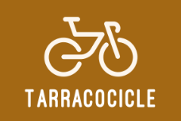

Centre d'investigació de l'importància dels carrils bici a Tarragona
Fundador i investigador principal
Encarregat de liderar el grup de recerca, danalitzar polítiques relacionades amb la mobilitat urbana i els carrils bici i de coordinar la recerca.
Núm: +34 622 56 57 85
Financer de la investigació
Paper fonamental per garantir la viabilitat financera del projecte de recerca sobre la importància dels carrils bici a la ciutat.
Núm: +34 642 35 61 90
Investigador en Impacte Ambiental
Encarregat d'avaluar limpacte ambiental de la implementació de carrils bici a la ciutat.
Núm: +34 635 51 21 99
Especialista en Disseny Urbà i Seguretat Viària
Responsable d'avaluar i dissenyar la infraestructura dels carrils bici per garantir la seguretat dels usuaris i la integració efectiva amb la resta de l'entorn urbà.
Núm: +34 622 22 11 44
Coordinador de Comunicació i Divulgació
Encarregat de comunicar les troballes de la investigació a diferents audiències, incloent-hi autoritats municipals, organitzacions de la societat civil i el públic en general.
Núm: +34 655 37 88 22
Assistent de Recerca en Enquestes i Entrevistes
Responsable de recopilar dades qualitatives mitjançant enquestes, entrevistes i grups focals amb usuaris de carrils bici, residents locals i altres actors rellevants.
Núm: +34 655 37 88 22